Code
library(readxl)
# Read the data from Excel into R
mydata <- read_excel("exercise1.xlsx")
# Look at the first few lines of mydata
head(mydata)
# Create a ts object called myts
myts <- ts(mydata[,2:4], start = c(1981, 1), frequency = 4)library(readxl)
# Read the data from Excel into R
mydata <- read_excel("exercise1.xlsx")
# Look at the first few lines of mydata
head(mydata)
# Create a ts object called myts
myts <- ts(mydata[,2:4], start = c(1981, 1), frequency = 4)lot the data you stored as myts using autoplot() with facetting.
Plot the same data without facetting by setting the appropriate argument to FALSE. What happens?
Plot the gold, woolyrnq, and gas time series in separate plots.
Use which.max() to spot the outlier in the gold series. Which observation was it?
Apply the frequency() function to each commodity to get the number of observations per unit time. This would return 52 for weekly data, for example.
library(fpp2)Warning: package 'fpp2' was built under R version 4.3.1Registered S3 method overwritten by 'quantmod':
method from
as.zoo.data.frame zoo ── Attaching packages ────────────────────────────────────────────── fpp2 2.5 ──✔ ggplot2 3.4.3 ✔ fma 2.5
✔ forecast 8.21 ✔ expsmooth 2.3 Warning: package 'ggplot2' was built under R version 4.3.1Warning: package 'fma' was built under R version 4.3.1Warning: package 'expsmooth' was built under R version 4.3.1library(fpp3)── Attaching packages ────────────────────────────────────────────── fpp3 0.5 ──✔ tibble 3.2.1 ✔ tsibbledata 0.4.1
✔ dplyr 1.1.2 ✔ feasts 0.3.1
✔ tidyr 1.3.0 ✔ fable 0.3.3
✔ lubridate 1.9.2 ✔ fabletools 0.3.3
✔ tsibble 1.1.3 Warning: package 'fabletools' was built under R version 4.3.1── Conflicts ───────────────────────────────────────────────── fpp3_conflicts ──
✖ lubridate::date() masks base::date()
✖ dplyr::filter() masks stats::filter()
✖ tsibble::intersect() masks base::intersect()
✖ tsibble::interval() masks lubridate::interval()
✖ dplyr::lag() masks stats::lag()
✖ tsibble::setdiff() masks base::setdiff()
✖ tsibble::union() masks base::union()
Attaching package: 'fpp3'The following object is masked from 'package:fpp2':
insurance# Plot the data with facetting
#autoplot(myts, facets = TRUE)
# Plot the data without facetting
#autoplot(myts,facets=FALSE)
# Plot the three series
autoplot(gold)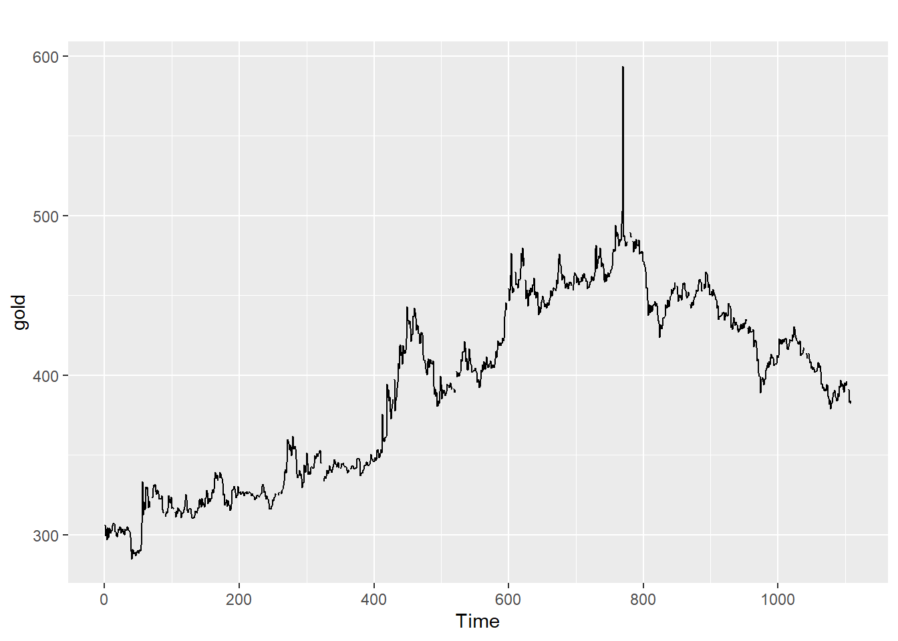
autoplot(woolyrnq)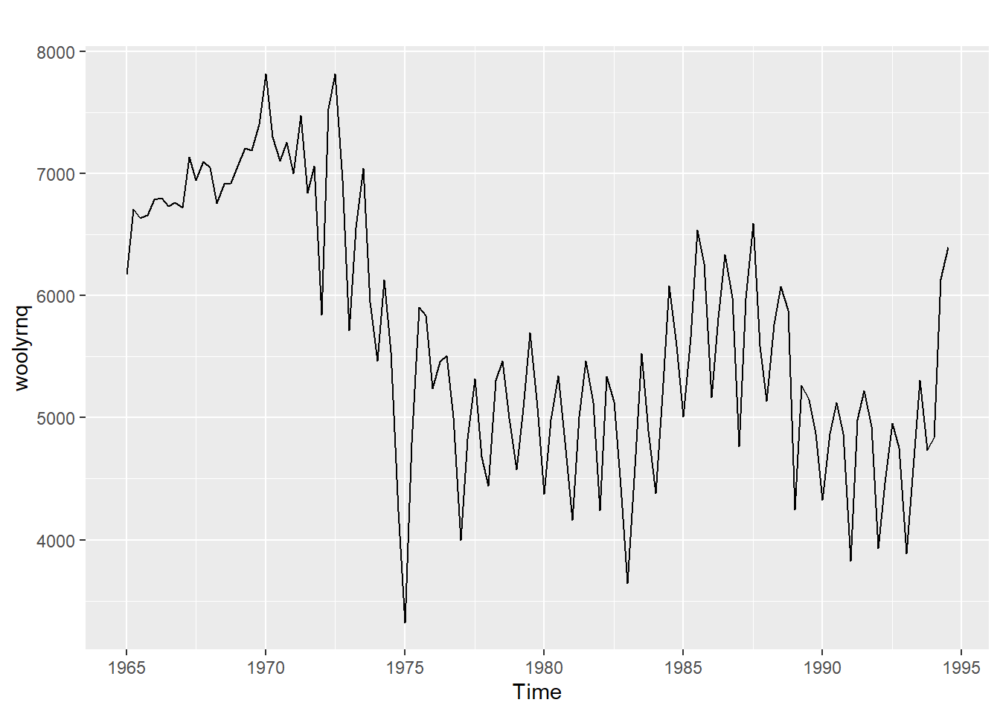
autoplot(gas)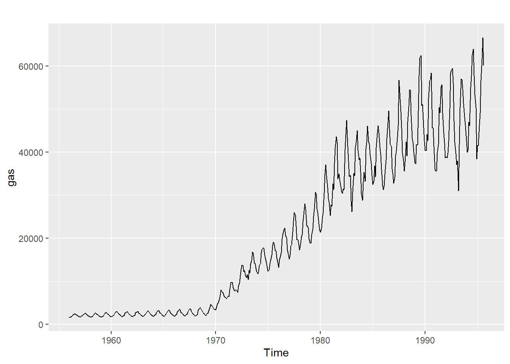
# Find the outlier in the gold series
goldoutlier <- which.max(gold)
# Look at the seasonal frequencies of the three series
frequency(gold)[1] 1frequency(woolyrnq)[1] 4frequency(gas)[1] 12Along with time plots, there are other useful ways of plotting data to emphasize seasonal patterns and show changes in these patterns over time.
A seasonal plot is similar to a time plot except that the data are plotted against the individual “seasons” in which the data were observed. You can create one using the ggseasonplot() function the same way you do with autoplot(). An interesting variant of a season plot uses polar coordinates, where the time axis is circular rather than horizontal; to make one, simply add a polar argument and set it to TRUE. A subseries plot comprises mini time plots for each season. Here, the mean for each season is shown as a blue horizontal line. One way of splitting a time series is by using the window() function, which extracts a subset from the object x observed between the times start and end.
window(x, start = NULL, end = NULL) In this exercise, you will load the fpp2 package and use two of its datasets:
a10 contains monthly sales volumes for anti-diabetic drugs in Australia. In the plots, can you see which month has the highest sales volume each year? What is unusual about the results in March and April 2008? ausbeer which contains quarterly beer production for Australia. What is happening to the beer production in Quarter 4? These examples will help you to visualize these plots and understand how they can be useful.
Use library() to load the fpp2 package. Use autoplot() and ggseasonplot() to produce plots of the a10 data. Use the ggseasonplot() function and its polar argument to produce a polar coordinate plot for the a10 data. Use the window() function to consider only the ausbeer data starting from 1992. Finally, use autoplot() and ggsubseriesplot() to produce plots of the beer series.
# Load the fpp2 package
library(fpp2)
# Create plots of the a10 data
autoplot(a10)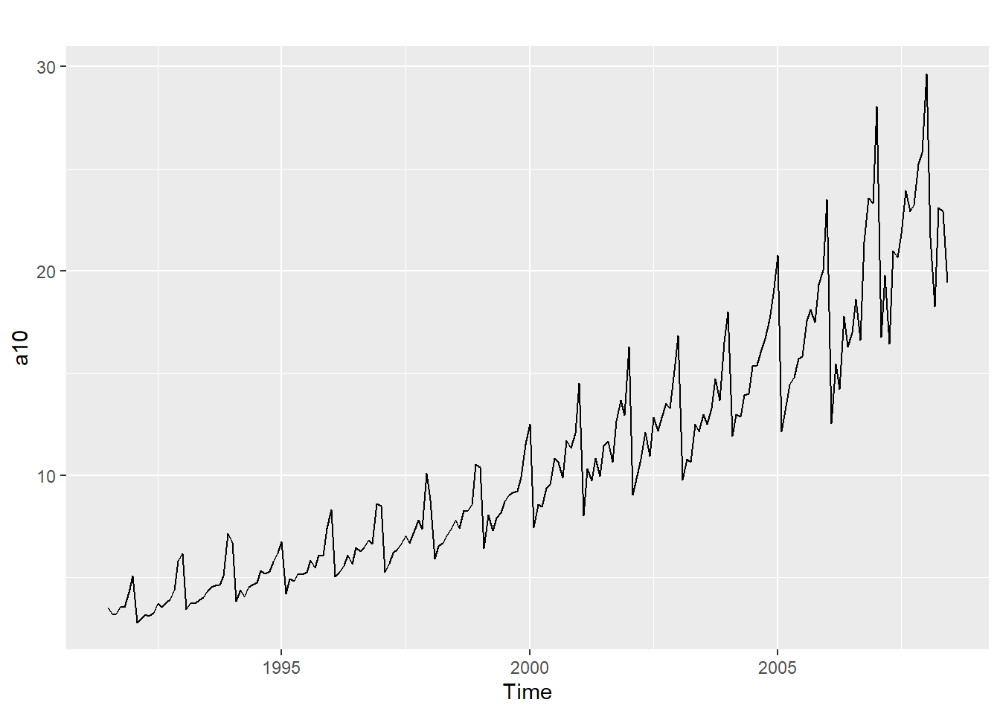
ggseasonplot(a10)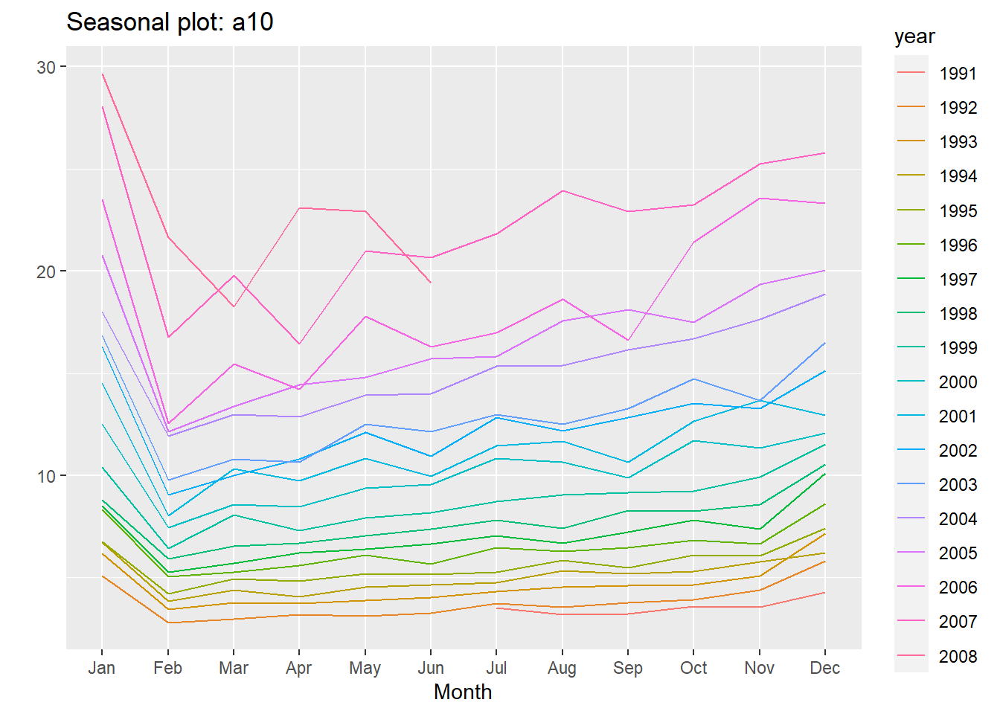
# Produce a polar coordinate season plot for the a10 data
ggseasonplot(a10, polar = TRUE)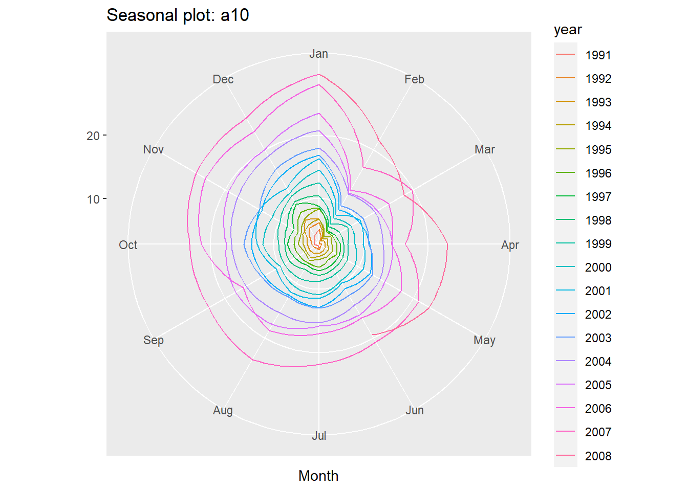
# Restrict the ausbeer data to start in 1992
beer <- window(ausbeer,start= 1992)
# Make plots of the beer data
autoplot(beer)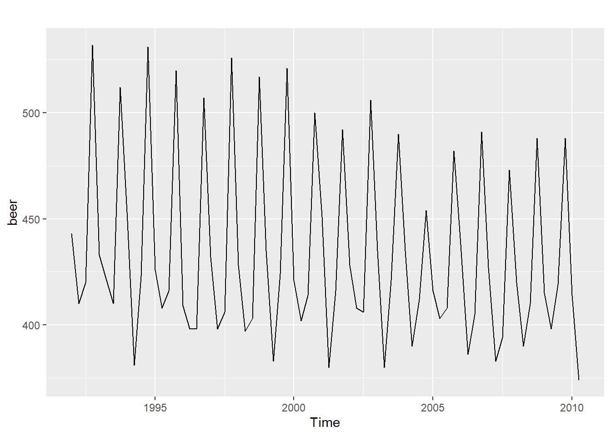
ggsubseriesplot(beer)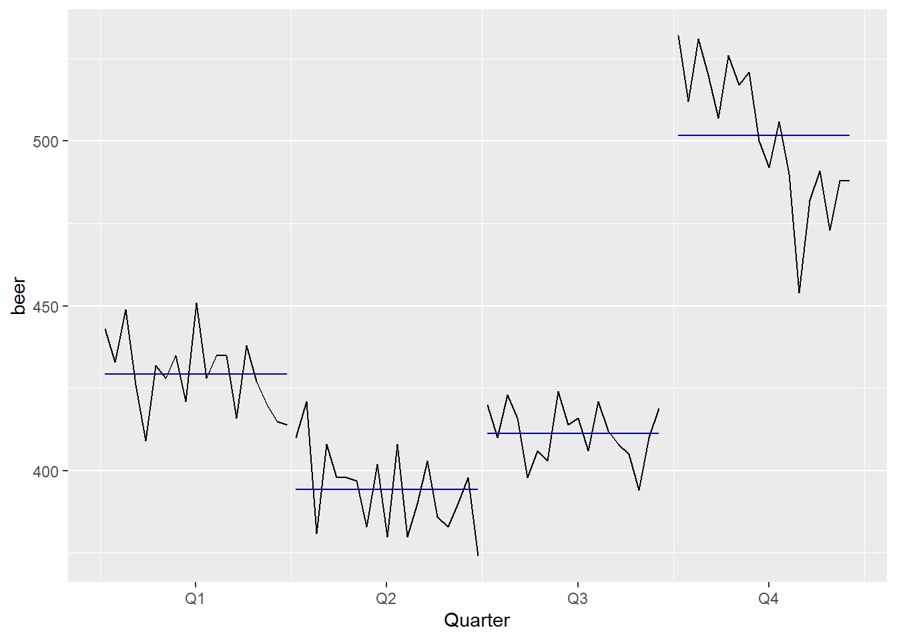
Another way to look at time series data is to plot each observation against another observation that occurred some time previously by using gglagplot(). For example, you could plot against . This is called a lag plot because you are plotting the time series against lags of itself.
The correlations associated with the lag plots form what is called the autocorrelation function (ACF). The ggAcf() function produces ACF plots.
In this exercise, you will work with the pre-loaded oil data (available in the package fpp2), which contains the annual oil production in Saudi Arabia from 1965-2013 (measured in millions of tons).
Use the autoplot() function to plot the oil data. For the oil data, plot the relationship between \(y_t\) and \(y_{t-1}, k=1,\dots,9\) using one of the two functions introduced above. Look at how the relationships change as the lag increases. Likewise, plot the correlations associated with each of the lag plots using the other appropriate new function.
# Create an autoplot of the oil data
autoplot(oil)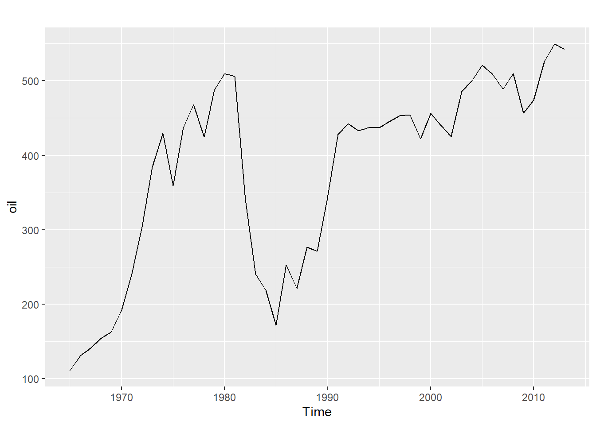
# Create a lag plot of the oil data
gglagplot(oil,lag=1:9)Warning in 1:lags: numerical expression has 9 elements: only the first used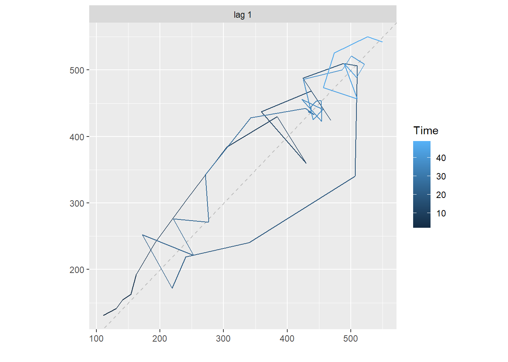
# Create an ACF plot of the oil data
ggAcf(oil)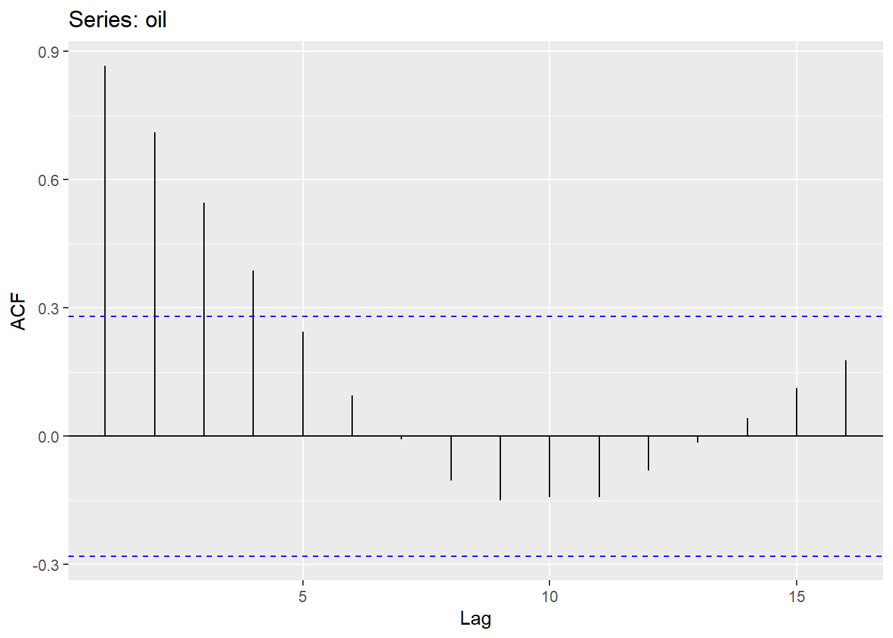
When data are either seasonal or cyclic, the ACF will peak around the seasonal lags or at the average cycle length.
You will investigate this phenomenon by plotting the annual sunspot series (which follows the solar cycle of approximately 10-11 years) in sunspot.year and the daily traffic to the Hyndsight blog (which follows a 7-day weekly pattern) in hyndsight. Both objects have been loaded into your workspace.
Produce a time plot and ACF plot of sunspot.year. By observing the ACF plot, at which lag value (x) can you find the maximum autocorrelation (y)? Set this equal to maxlag_sunspot. Produce a time plot and ACF plot of hyndsight. By observing the ACF plot, at which lag value (x) can you find the maximum autocorrelation (y)? Set this equal to maxlag_hyndsight.
# Plot the annual sunspot numbers
autoplot(sunspot.year)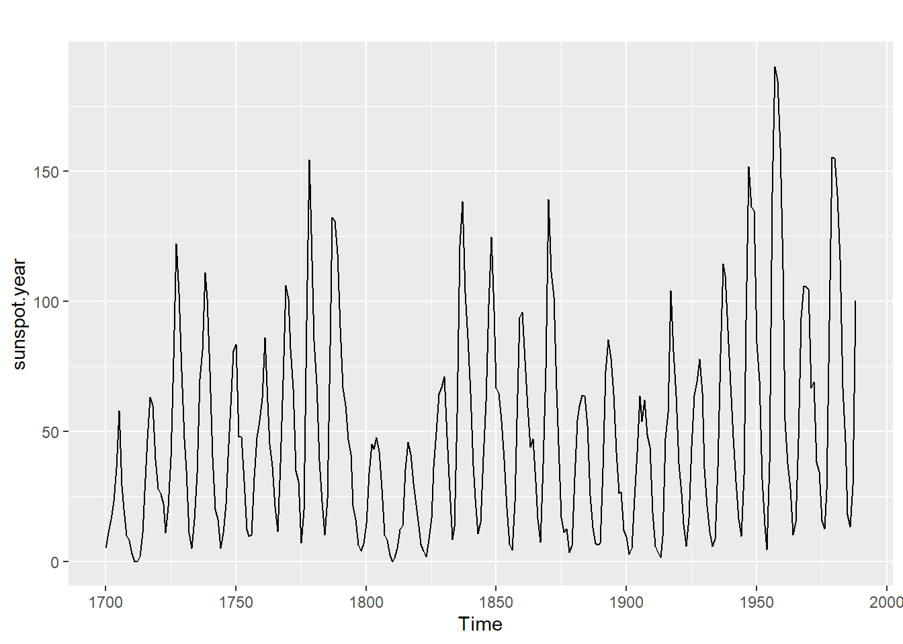
ggAcf(sunspot.year)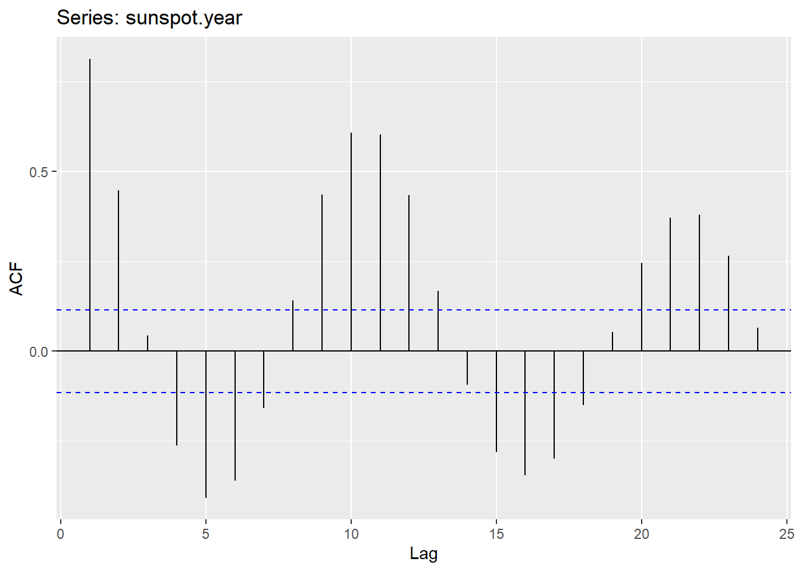
# Save the lag corresponding to maximum autocorrelation
maxlag_sunspot <- lag(1)
# Plot the traffic on the Hyndsight blog
autoplot(hyndsight)
ggAcf(hyndsight)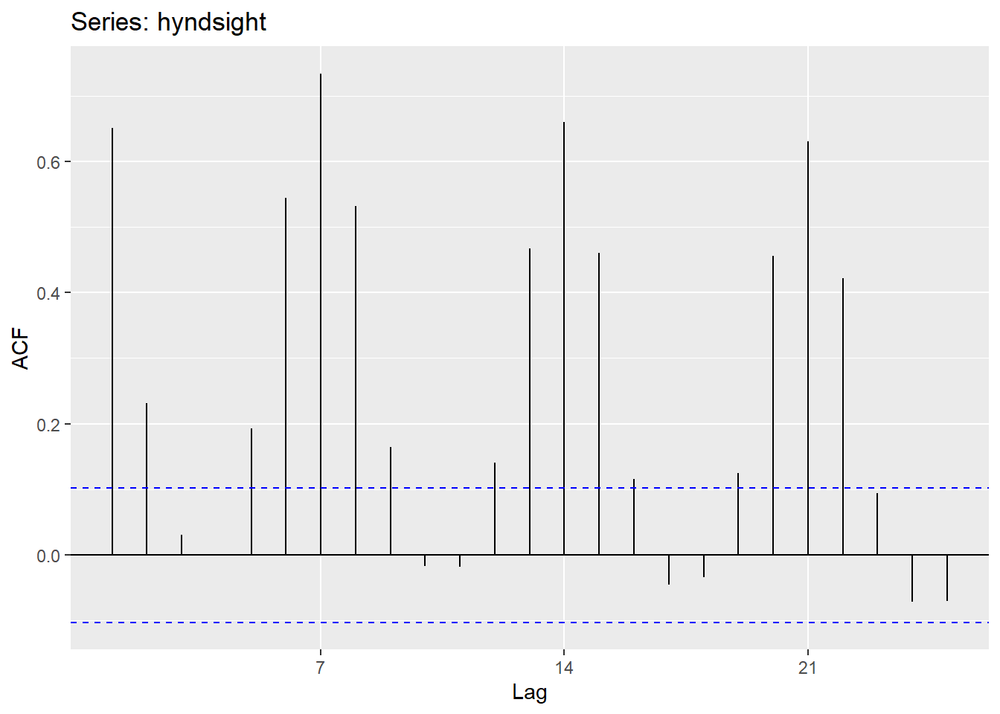
# Save the lag corresponding to maximum autocorrelation
maxlag_hyndsight <- lag(7)Possible Answers
1-B, 2-C, 3-D, 4-A
1-B, 2-A, 3-D, 4-C (correct)
1-C, 2-D, 3-B, 4-A
1-A, 2-C, 3-D, 4-B
1-C, 2-A, 3-D, 4-B

As you learned in the video, white noise is a term that describes purely random data. You can conduct a Ljung-Box test using the function below to confirm the randomness of a series; a p-value greater than 0.05 suggests that the data are not significantly different from white noise.
Box.test(pigs, lag = 24, fitdf = 0, type = “Ljung”) There is a well-known result in economics called the “Efficient Market Hypothesis” that states that asset prices reflect all available information. A consequence of this is that the daily changes in stock prices should behave like white noise (ignoring dividends, interest rates and transaction costs). The consequence for forecasters is that the best forecast of the future price is the current price.
You can test this hypothesis by looking at the goog series, which contains the closing stock price for Google over 1000 trading days ending on February 13, 2017. This data has been loaded into your workspace.
First plot the goog series using autoplot(). Using the diff() function with autoplot(), plot the daily changes in Google stock prices. Use the ggAcf() function to check if these daily changes look like white noise. Fill in the pre-written code to do a Ljung-Box test on the daily changes using 10 lags.
# Plot the original series
autoplot(goog)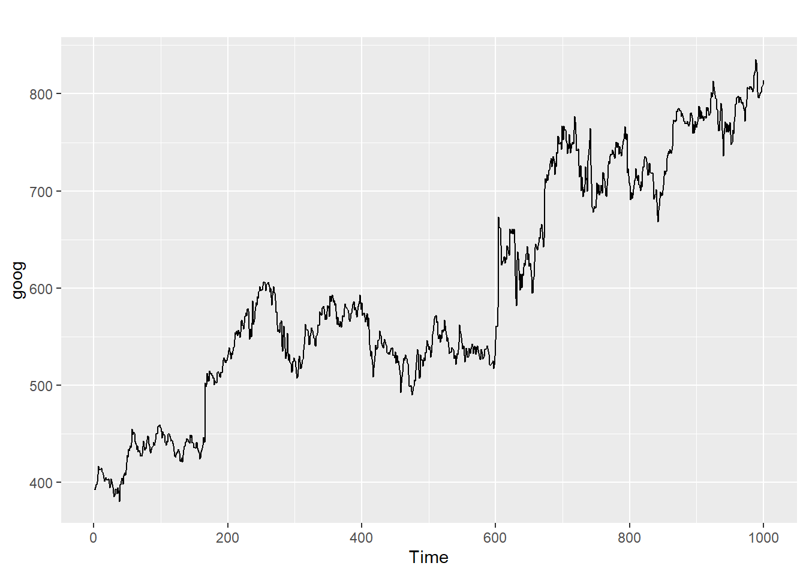
# Plot the differenced series
autoplot(diff(goog))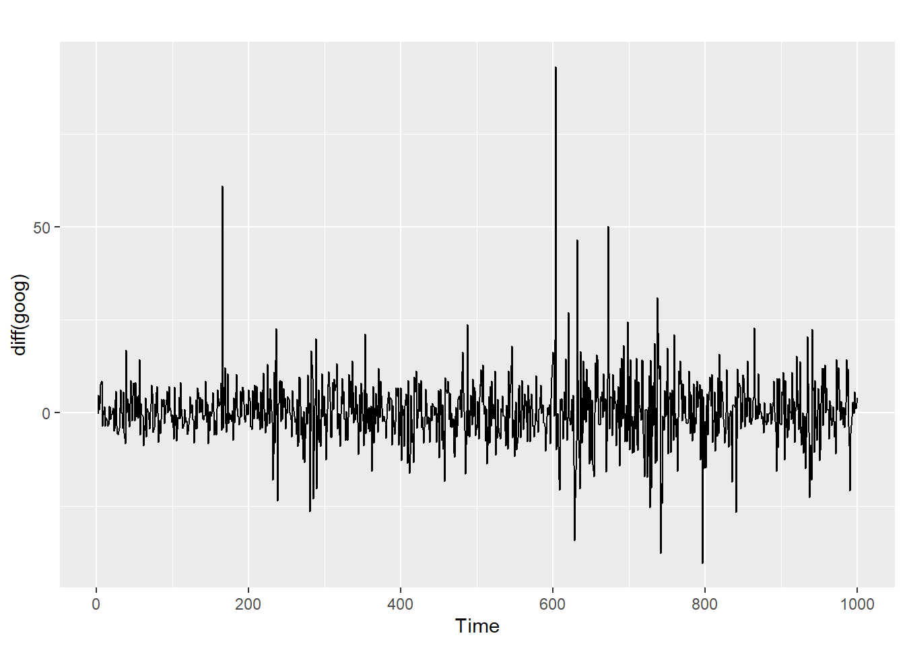
# ACF of the differenced series
ggAcf(diff(goog))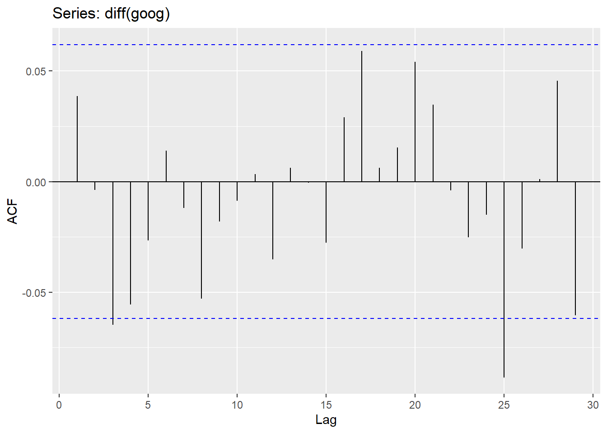
# Ljung-Box test of the differenced series
Box.test(diff(goog), lag = 10, type = "Ljung")
Box-Ljung test
data: diff(goog)
X-squared = 13.123, df = 10, p-value = 0.2169As you learned in the video, a forecast is the mean or median of simulated futures of a time series.
The very simplest forecasting method is to use the most recent observation; this is called a naive forecast and can be implemented in a namesake function. This is the best that can be done for many time series including most stock price data, and even if it is not a good forecasting method, it provides a useful benchmark for other forecasting methods.
For seasonal data, a related idea is to use the corresponding season from the last year of data. For example, if you want to forecast the sales volume for next March, you would use the sales volume from the previous March. This is implemented in the snaive() function, meaning, seasonal naive.
For both forecasting methods, you can set the second argument h, which specifies the number of values you want to forecast; as shown in the code below, they have different default values. The resulting output is an object of class forecast. This is the core class of objects in the forecast package, and there are many functions for dealing with them including summary() and autoplot().
naive(y, h = 10) snaive(y, h = 2 * frequency(x)) You will try these two functions on the goog series and ausbeer series, respectively. These are available to use in your workspace.
Use naive() to forecast the next 20 values of the goog series, and save this to fcgoog. Plot and summarize the forecasts using autoplot() and summary(). Use snaive() to forecast the next 16 values of the ausbeer series, and save this to fcbeer. Plot and summarize the forecasts for fcbeer the same way you did for fcgoog.
# Use naive() to forecast the goog series
fcgoog <- naive(goog,h=20)
# Plot and summarize the forecasts
autoplot(fcgoog)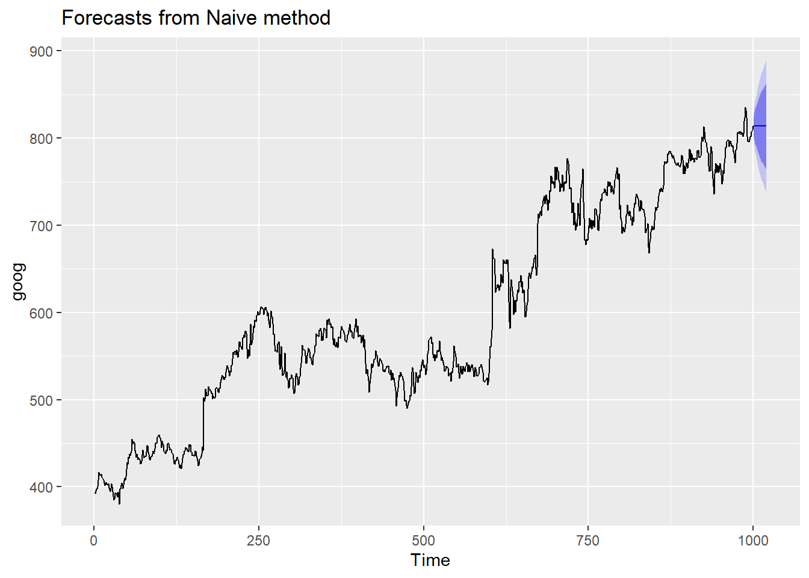
summary(fcgoog)
Forecast method: Naive method
Model Information:
Call: naive(y = goog, h = 20)
Residual sd: 8.7343
Error measures:
ME RMSE MAE MPE MAPE MASE ACF1
Training set 0.4212612 8.734286 5.829407 0.06253998 0.9741428 1 0.03871446
Forecasts:
Point Forecast Lo 80 Hi 80 Lo 95 Hi 95
1001 813.67 802.4765 824.8634 796.5511 830.7889
1002 813.67 797.8401 829.4999 789.4602 837.8797
1003 813.67 794.2824 833.0576 784.0192 843.3208
1004 813.67 791.2831 836.0569 779.4322 847.9078
1005 813.67 788.6407 838.6993 775.3910 851.9490
1006 813.67 786.2518 841.0882 771.7374 855.6025
1007 813.67 784.0549 843.2850 768.3777 858.9623
1008 813.67 782.0102 845.3298 765.2505 862.0895
1009 813.67 780.0897 847.2503 762.3133 865.0266
1010 813.67 778.2732 849.0667 759.5353 867.8047
1011 813.67 776.5456 850.7944 756.8931 870.4469
1012 813.67 774.8948 852.4452 754.3684 872.9715
1013 813.67 773.3115 854.0285 751.9470 875.3930
1014 813.67 771.7880 855.5520 749.6170 877.7230
1015 813.67 770.3180 857.0220 747.3688 879.9711
1016 813.67 768.8962 858.4437 745.1944 882.1455
1017 813.67 767.5183 859.8217 743.0870 884.2530
1018 813.67 766.1802 861.1597 741.0407 886.2993
1019 813.67 764.8789 862.4610 739.0505 888.2895
1020 813.67 763.6114 863.7286 737.1120 890.2280# Use snaive() to forecast the ausbeer series
fcbeer <- snaive(ausbeer,h=16)
# Plot and summarize the forecasts
autoplot(fcbeer)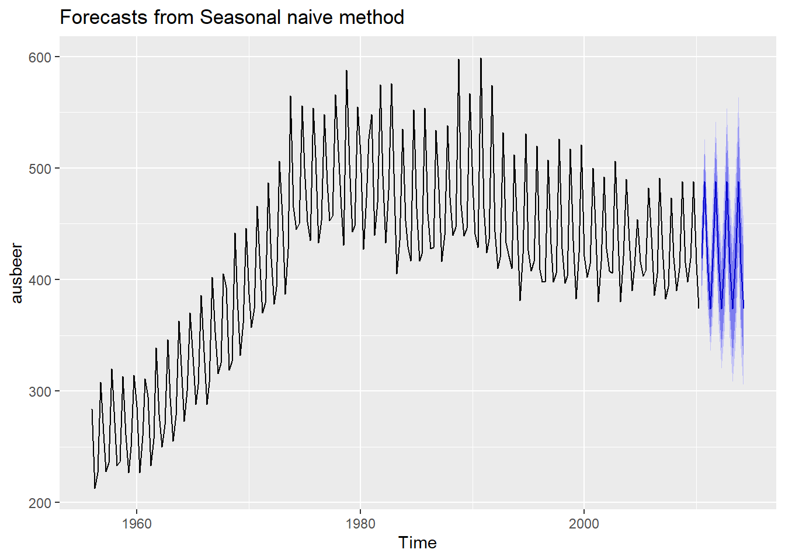
summary(fcbeer)
Forecast method: Seasonal naive method
Model Information:
Call: snaive(y = ausbeer, h = 16)
Residual sd: 19.3259
Error measures:
ME RMSE MAE MPE MAPE MASE ACF1
Training set 3.098131 19.32591 15.50935 0.838741 3.69567 1 0.01093868
Forecasts:
Point Forecast Lo 80 Hi 80 Lo 95 Hi 95
2010 Q3 419 394.2329 443.7671 381.1219 456.8781
2010 Q4 488 463.2329 512.7671 450.1219 525.8781
2011 Q1 414 389.2329 438.7671 376.1219 451.8781
2011 Q2 374 349.2329 398.7671 336.1219 411.8781
2011 Q3 419 383.9740 454.0260 365.4323 472.5677
2011 Q4 488 452.9740 523.0260 434.4323 541.5677
2012 Q1 414 378.9740 449.0260 360.4323 467.5677
2012 Q2 374 338.9740 409.0260 320.4323 427.5677
2012 Q3 419 376.1020 461.8980 353.3932 484.6068
2012 Q4 488 445.1020 530.8980 422.3932 553.6068
2013 Q1 414 371.1020 456.8980 348.3932 479.6068
2013 Q2 374 331.1020 416.8980 308.3932 439.6068
2013 Q3 419 369.4657 468.5343 343.2438 494.7562
2013 Q4 488 438.4657 537.5343 412.2438 563.7562
2014 Q1 414 364.4657 463.5343 338.2438 489.7562
2014 Q2 374 324.4657 423.5343 298.2438 449.7562When applying a forecasting method, it is important to always check that the residuals are well-behaved (i.e., no outliers or patterns) and resemble white noise. The prediction intervals are computed assuming that the residuals are also normally distributed. You can use the checkresiduals() function to verify these characteristics; it will give the results of a Ljung-Box test.
You haven’t used the pipe function (%>%) so far, but this is a good opportunity to introduce it. When there are many nested functions, pipe functions make the code much easier to read. To be consistent, always follow a function with parentheses to differentiate it from other objects, even if it has no arguments. An example is below:
function(foo) # These two foo %>% function() # are the same!
foo %>% function # Inconsistent In this exercise, you will test the above functions on the forecasts equivalent to what you produced in the previous exercise (fcgoog obtained after applying naive() to goog, and fcbeer obtained after applying snaive() to ausbeer).
Using the above pipe function, run checkresiduals() on a forecast equivalent to fcgoog. Based on this Ljung-Box test results, do the residuals resemble white noise? Assign googwn to either TRUE or FALSE. Using a similar pipe function, run checkresiduals() on a forecast equivalent to fcbeer. Based on this Ljung-Box test results, do the residuals resemble white noise? Assign beerwn to either TRUE or FALSE.
# Check the residuals from the naive forecasts applied to the goog series
goog %>% naive() %>% checkresiduals()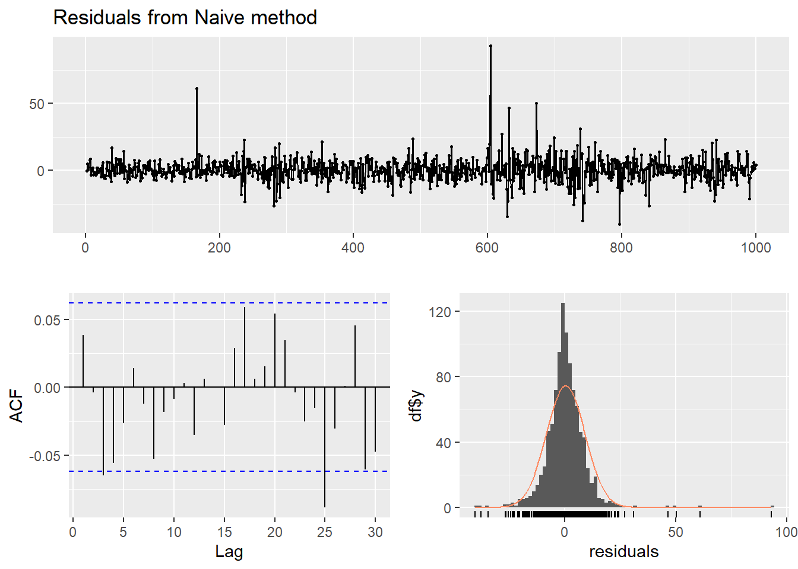
Ljung-Box test
data: Residuals from Naive method
Q* = 13.123, df = 10, p-value = 0.2169
Model df: 0. Total lags used: 10# Do they look like white noise (TRUE or FALSE)
googwn <- TRUE
# Check the residuals from the seasonal naive forecasts applied to the ausbeer series
fcbeer<-ausbeer %>% snaive()%>% checkresiduals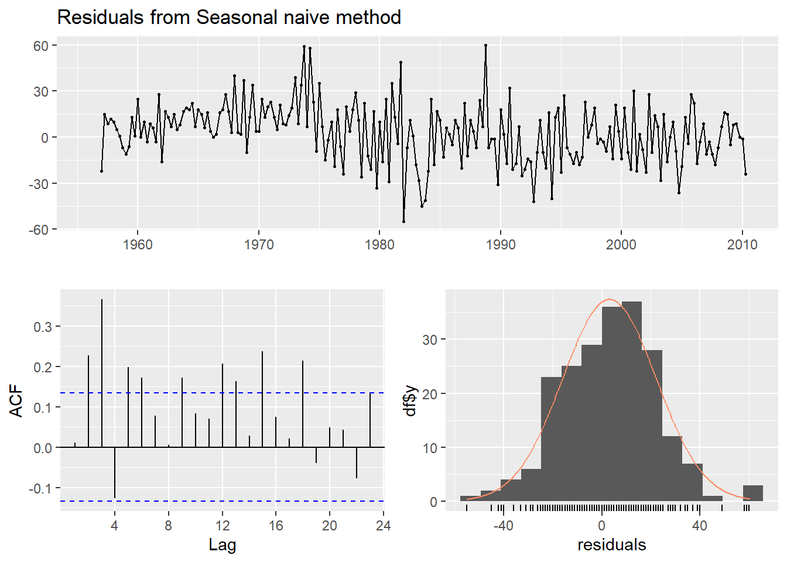
Ljung-Box test
data: Residuals from Seasonal naive method
Q* = 60.535, df = 8, p-value = 3.661e-10
Model df: 0. Total lags used: 8# Do they look like white noise (TRUE or FALSE)
beerwn <- FALSEIn data science, a training set is a data set that is used to discover possible relationships. A test set is a data set that is used to verify the strength of these potential relationships. When you separate a data set into these parts, you generally allocate more of the data for training, and less for testing.
One function that can be used to create training and test sets is subset.ts(), which returns a subset of a time series where the optional start and end arguments are specified using index values.
x is a numerical vector or time series
To subset observations from 101 to 500
train <- subset(x, start = 101, end = 500, …)
To subset the first 500 observations
train <- subset(x, end = 500, …) As you saw in the video, another function, accuracy(), computes various forecast accuracy statistics given the forecasts and the corresponding actual observations. It is smart enough to find the relevant observations if you give it more than the ones you are forecasting.
f is an object of class “forecast”
x is a numerical vector or time series
accuracy(f, x, …) The accuracy measures provided include root mean squared error (RMSE) which is the square root of the mean squared error (MSE). Minimizing RMSE, which corresponds with increasing accuracy, is the same as minimizing MSE.
The pre-loaded time series gold comprises daily gold prices for 1108 days. Here, you’ll use the first 1000 days as a training set, and compute forecasts for the remaining 108 days. These will be compared to the actual values for these days using the simple forcasting functions naive(), which you used earlier in this chapter, and meanf(), which gives forecasts equal to the mean of all observations. You’ll have to specify the keyword h (which specifies the number of values you want to forecast) for both.
Use subset() to create a training set for gold comprising the first 1000 observations. This will be called train. Compute forecasts of the test set, containing the remaining data, using naive() and assign this to naive_fc. Set h accordingly. Now, compute forecasts of the same test set using meanf() and assign this to mean_fc. Set h accordingly. Compare the forecast accuracy statistics of the two methods using the accuracy() function. Based on the above results, store the forecasts with the higher accuracy as bestforecasts.
# install.packages("remotes")
#remotes::install_github("robjhyndman/forecast")
library(forecast)
# Create the training data as train
train <- subset(gold, end = 1000)
# Compute naive forecasts and save to naive_fc
naive_fc <- naive(train, h = 108)
# Compute mean forecasts and save to mean_fc
mean_fc <- meanf(train, h = 108)
# Use accuracy() to compute RMSE statistics
#accuracy(naive_fc, gold)
#accuracy(mean_fc, gold)
# Assign one of the two forecasts as bestforecasts
bestforecasts <- naive_fcAs you learned in the first chapter, the window() function specifies the start and end of a time series using the relevant times rather than the index values. Either of those two arguments can be formatted as a vector like c(year, period) which you have also previously used as an argument for ts(). Again, period refers to quarter here.
Here, you will use the Melbourne quarterly visitor numbers (vn[, “Melbourne”]) to create three different training sets, omitting the last 1, 2 and 3 years, respectively. Inspect the pre-loaded vn data in your console before beginning the exercise; this will help you determine the correct value to use for the keyword h (which specifies the number of values you want to forecast) in your forecasting methods.
Then for each training set, compute the next year of data, and finally compare the mean absolute percentage error (MAPE) of the forecasts using accuracy(). Why do you think that the MAPE vary so much?
Use window() to create three training sets from vn[,“Melbourne”], omitting the last 1, 2 and 3 years; call these train1, train2, and train3, respectively. Set the end keyword accordingly. Compute one year of forecasts for each training set using the snaive() method. Call these fc1, fc2, and fc3, respectively. Following the structure of the sample code, compare the MAPE of the three sets of forecasts using the accuracy() function as your test set.
# Create three training series omitting the last 1, 2, and 3 years
train1 <- window(vn[, "Melbourne"], end = c(2014, 4))
train2 <- window(vn[, "Melbourne"], end = c(2013, 4))
train3 <- window(vn[, "Melbourne"], end = c(2012, 4))
# Produce forecasts using snaive()
fc1 <- snaive(train1, h = 4)
fc2 <- snaive(train2, h = 4)
fc3 <- snaive(train3, h = 4)
# Use accuracy() to compare the MAPE of each series
#accuracy(fc1, vn[, "Melbourne"])["Test set", "MAPE"]
#accuracy(fc2, vn[, "Melbourne"])["Test set", "MAPE"]
accuracy(fc3, vn[, "Melbourne"])["Test set", "MAPE"]The tsCV() function computes time series cross-validation errors. It requires you to specify the time series, the forecast method, and the forecast horizon. Here is the example used in the video:
e = tsCV(oil, forecastfunction = naive, h = 1) Here, you will use tsCV() to compute and plot the MSE values for up to 8 steps ahead, along with the naive() method applied to the goog data. The exercise uses ggplot2 graphics which you may not be familiar with, but we have provided enough of the code so you can work out the rest.
Be sure to reference the slides on tsCV() in the lecture. The goog data has been loaded into your workspace.
Using the goog data and forecasting with the naive() function, compute the cross-validated errors for up to 8 steps ahead. Assign this to e. Compute the MSE values for each forecast horizon and remove missing values in e by specifying the second argument. The expression for calculating MSE has been provided. Plot the resulting MSE values (y) against the forecast horizon (x). Think through your knowledge of functions. If MSE = mse is provided in the list of function arguments, then mse should refer to an object that exists in your workspace outside the function, whereas MSE is the variable that you refers to this object within your function.
# Compute cross-validated errors for up to 8 steps ahead
e <- tsCV(goog, forecastfunction = naive, h = 8)
# Compute the MSE values and remove missing values
mse <- colMeans(e^2, na.rm = TRUE)
# Plot the MSE values against the forecast horizon
data.frame(h = 1:8, MSE = mse) %>%
ggplot(aes(x = h, y = MSE)) + geom_point()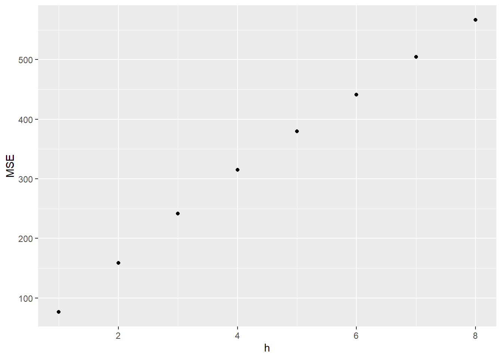
The ses() function produces forecasts obtained using simple exponential smoothing (SES). The parameters are estimated using least squares estimation. All you need to specify is the time series and the forecast horizon; the default forecast time is h = 10 years.
args(ses) function (y, h = 10, …)
fc <- ses(oildata, h = 5) summary(fc) You will also use summary() and fitted(), along with autolayer() for the first time, which is like autoplot() but it adds a “layer” to a plot rather than creating a new plot.
Here, you will apply these functions to marathon, the annual winning times in the Boston marathon from 1897-2016. The data are available in your workspace.
Use the ses() function to forecast the next 10 years of winning times. Use the summary() function to see the model parameters and other information. Use the autoplot() function to plot the forecasts. Add the one-step forecasts for the training data, or fitted values, to the plot using fitted() and autolayer().
# Use ses() to forecast the next 10 years of winning times
fc <- ses(marathon, h = 10)
# Use summary() to see the model parameters
summary(fc)
Forecast method: Simple exponential smoothing
Model Information:
Simple exponential smoothing
Call:
ses(y = marathon, h = 10)
Smoothing parameters:
alpha = 0.3457
Initial states:
l = 167.1741
sigma: 5.519
AIC AICc BIC
988.4474 988.6543 996.8099
Error measures:
ME RMSE MAE MPE MAPE MASE
Training set -0.8874349 5.472771 3.826294 -0.7097395 2.637644 0.8925685
ACF1
Training set -0.01211236
Forecasts:
Point Forecast Lo 80 Hi 80 Lo 95 Hi 95
2017 130.3563 123.2835 137.4292 119.5394 141.1733
2018 130.3563 122.8727 137.8399 118.9111 141.8015
2019 130.3563 122.4833 138.2293 118.3156 142.3970
2020 130.3563 122.1123 138.6003 117.7482 142.9644
2021 130.3563 121.7573 138.9553 117.2053 143.5074
2022 130.3563 121.4164 139.2963 116.6839 144.0288
2023 130.3563 121.0880 139.6247 116.1816 144.5310
2024 130.3563 120.7708 139.9418 115.6966 145.0161
2025 130.3563 120.4639 140.2488 115.2271 145.4856
2026 130.3563 120.1661 140.5466 114.7717 145.9409# Use autoplot() to plot the forecasts
autoplot(fc)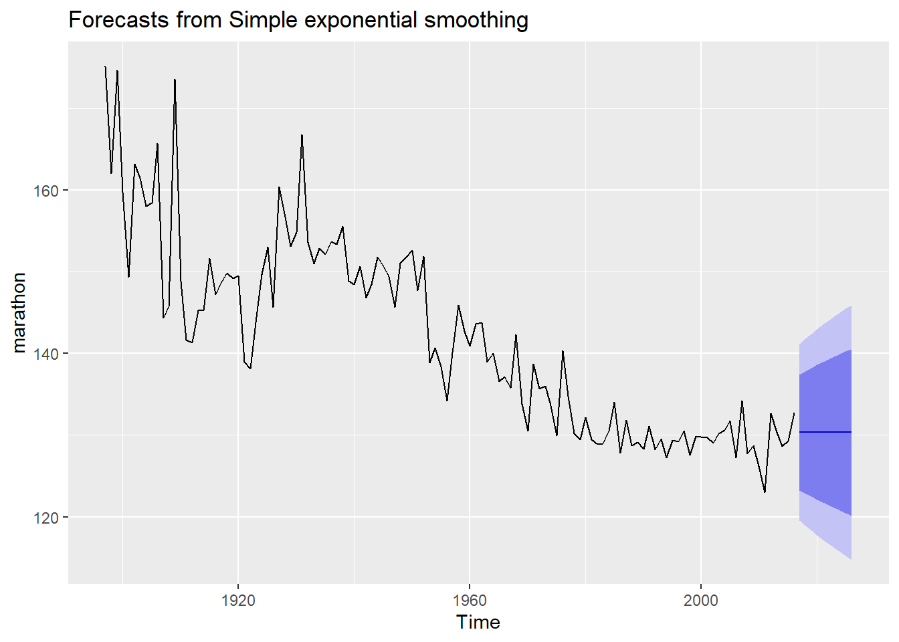
# Add the one-step forecasts for the training data to the plot
autoplot(fc) + autolayer(fitted(fc))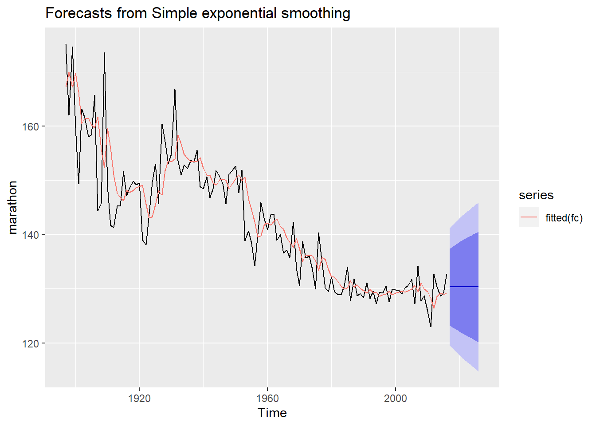
In this exercise, you will apply your knowledge of training and test sets, the subset() function, and the accuracy() function, all of which you learned in Chapter 2, to compare SES and naive forecasts for the marathon data.
You did something very similar to compare the naive and mean forecasts in an earlier exercise “Evaluating forecast accuracy of non-seasonal methods”.
Let’s review the process:
First, import and load your data. Determine how much of your data you want to allocate to training, and how much to testing; the sets should not overlap. Subset the data to create a training set, which you will use as an argument in your forecasting function(s). Optionally, you can also create a test set to use later. Compute forecasts of the training set using whichever forecasting function(s) you choose, and set h equal to the number of values you want to forecast, which is also the length of the test set. To view the results, use the accuracy() function with the forecast as the first argument and original data (or test set) as the second. Pick a measure in the output, such as RMSE or MAE, to evaluate the forecast(s); a smaller error indicates higher accuracy. The marathon data is loaded into your workspace.
Using subset(), create a training set for marathon comprising all but the last 20 years of the data which you will reserve for testing. Compute the SES and naive forecasts of this training set and save them to fcses and fcnaive, respectively. Calculate forecast accuracy measures of the two sets of forecasts using the accuracy() function in your console. Assign the best forecasts (either fcses or fcnaive) based on RMSE to fcbest.
# Create a training set using subset()
train <- subset(marathon, end = length(marathon) - 20)
# Compute SES and naive forecasts, save to fcses and fcnaive
fcses <- ses(train, h = 20)
fcnaive <- naive(train, h = 20)
# Calculate forecast accuracy measures
#accuracy( fcses,marathon)
#accuracy(fcnaive, marathon)
# Save the best forecasts as fcbest
fcbest <- fcnaiveHolt’s local trend method is implemented in the holt() function:
holt(y, h = 10, …) Here, you will apply it to the austa series, which contains annual counts of international visitors to Australia from 1980-2015 (in millions). The data has been pre-loaded into your workspace.
Produce 10 year forecasts of austa using Holt’s method. Set h accordingly. Use the summary() function to view the model parameters and other information. Plot your forecasts using the standard time plotting function. Use checkresiduals() to see if the residuals resemble white noise.
# Produce 10 year forecasts of austa using holt()
fcholt <- holt(austa,h=10)
# Look at fitted model using summary()
summary(fcholt)
Forecast method: Holt's method
Model Information:
Holt's method
Call:
holt(y = austa, h = 10)
Smoothing parameters:
alpha = 0.9999
beta = 0.0085
Initial states:
l = 0.656
b = 0.1706
sigma: 0.1952
AIC AICc BIC
17.14959 19.14959 25.06719
Error measures:
ME RMSE MAE MPE MAPE MASE
Training set 0.00372838 0.1840662 0.1611085 -1.222083 5.990319 0.7907078
ACF1
Training set 0.2457733
Forecasts:
Point Forecast Lo 80 Hi 80 Lo 95 Hi 95
2016 7.030683 6.780483 7.280882 6.648036 7.413330
2017 7.202446 6.847114 7.557778 6.659013 7.745879
2018 7.374209 6.937169 7.811249 6.705814 8.042604
2019 7.545972 7.039179 8.052765 6.770899 8.321045
2020 7.717736 7.148723 8.286748 6.847506 8.587965
2021 7.889499 7.263543 8.515455 6.932181 8.846816
2022 8.061262 7.382302 8.740222 7.022882 9.099642
2023 8.233025 7.504136 8.961915 7.118285 9.347766
2024 8.404788 7.628444 9.181133 7.217472 9.592105
2025 8.576552 7.754792 9.398311 7.319779 9.833324# Plot the forecasts
autoplot(fcholt)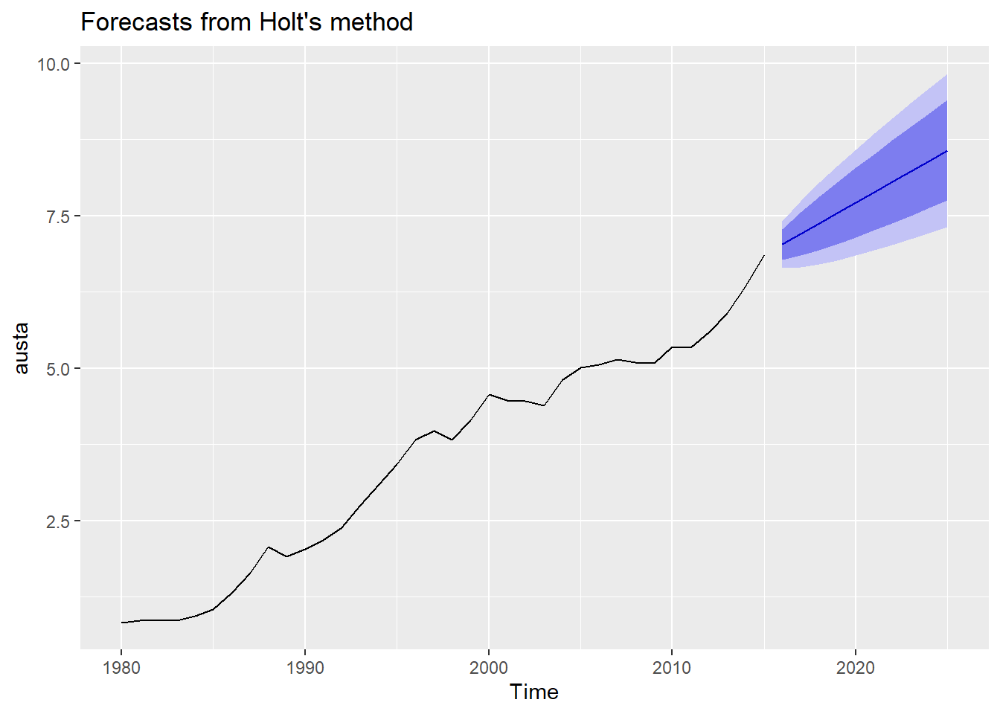
# Check that the residuals look like white noise
checkresiduals(fcholt)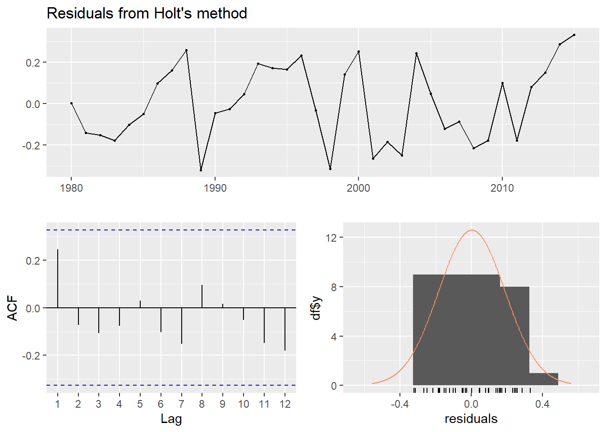
Ljung-Box test
data: Residuals from Holt's method
Q* = 4.8886, df = 7, p-value = 0.6736
Model df: 0. Total lags used: 7In the video, you learned that the hw() function produces forecasts using the Holt-Winters method specific to whatever you set equal to the seasonal argument:
fc1 <- hw(aust, seasonal = “additive”) fc2 <- hw(aust, seasonal = “multiplicative”) Here, you will apply hw() to a10, the monthly sales of anti-diabetic drugs in Australia from 1991 to 2008. The data are available in your workspace.
Produce a time plot of the a10 data. Produce forecasts for the next 3 years using hw() with multiplicative seasonality and save this to fc. Do the residuals look like white noise? Check them using the appropriate function and set whitenoise to either TRUE or FALSE. Plot a time plot of the forecasts.
# Plot the data
autoplot(a10)# Produce 3 year forecasts
fc <- hw(a10, seasonal ="multiplicative", h = 36)
# Check if residuals look like white noise
checkresiduals(fc)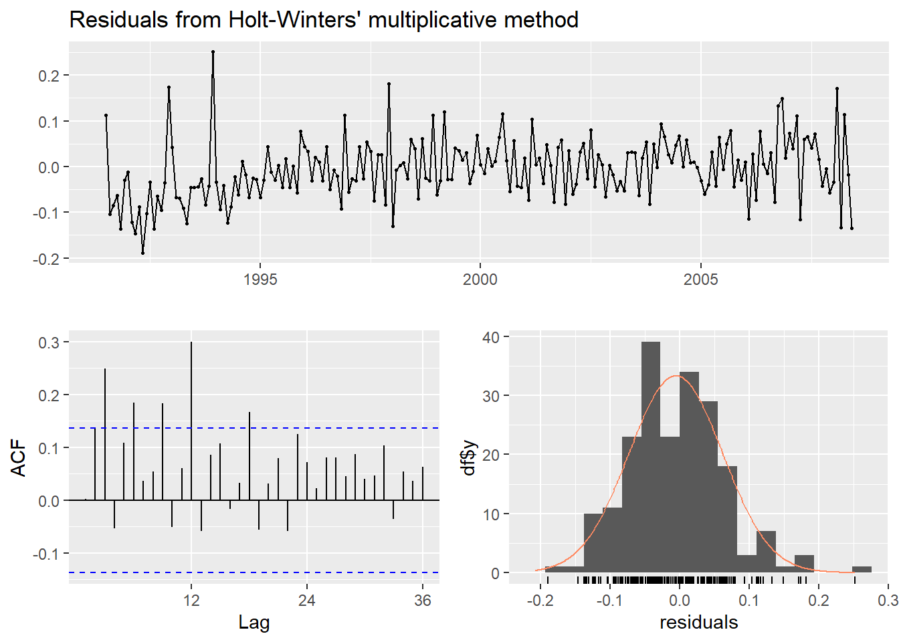
Ljung-Box test
data: Residuals from Holt-Winters' multiplicative method
Q* = 75.764, df = 24, p-value = 2.835e-07
Model df: 0. Total lags used: 24whitenoise <- FALSE
# Plot forecasts
autoplot(fc)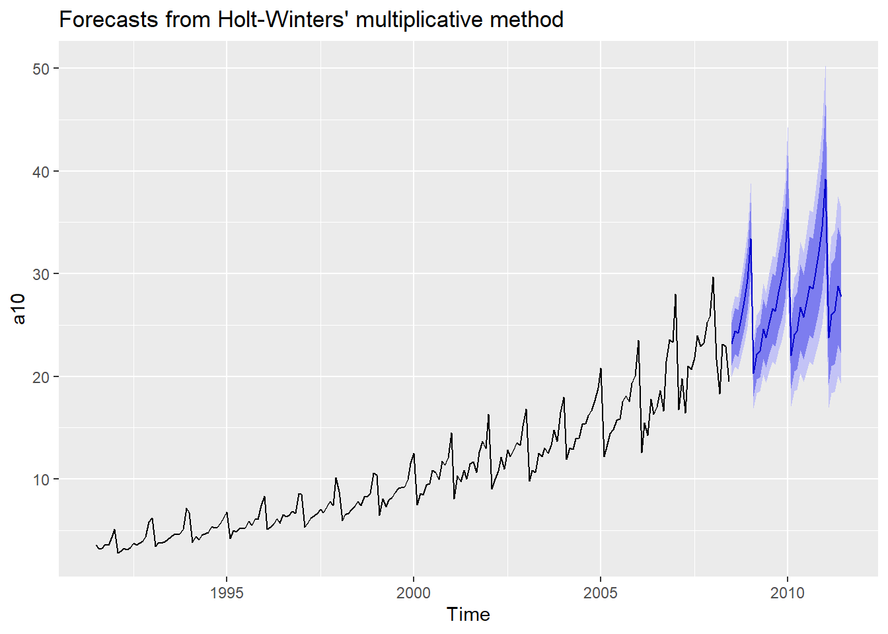
The Holt-Winters method can also be used for daily type of data, where the seasonal pattern is of length 7, and the appropriate unit of time for h is in days.
Here, you will compare an additive Holt-Winters method and a seasonal naive() method for the hyndsight data, which contains the daily pageviews on the Hyndsight blog for one year starting April 30, 2014. The data are available in your workspace.
Using subset.ts(), set up a training set where the last 4 weeks of the available data in hyndsight have been omitted. Produce forecasts for these last 4 weeks using hw() and additive seasonality applied to the training data. Assign this to fchw. Produce seasonal naive forecasts for the same period. Use the appropriate function, introduced in a previous chapter, and assign this to fcsn. Which is the better of the two forecasts based on RMSE? Use the accuracy() function to determine this. Produce time plots of these forecasts.
# Create training data with subset()
#train <- subset(___, end = ___)
# Holt-Winters additive forecasts as fchw
#fchw <- hw(___, seasonal = ___, h = ___)
# Seasonal naive forecasts as fcsn
#fcsn <- ___
# Find better forecasts with accuracy()
#accuracy(___, ___)
#accuracy(___, ___)
# Plot the better forecasts
#autoplot(___)# Create training data with subset()
train <- subset(hyndsight, end = length(hyndsight) - 28)
# Holt-Winters additive forecasts as fchw
fchw <- hw(train, seasonal = "additive", h = 28)
# Seasonal naive forecasts as fcsn
fcsn <- snaive(train, h = 28)
# Find better forecasts with accuracy()
#accuracy(fchw, hyndsight)
#accuracy(fcsn, hyndsight)
# Plot the better forecasts
autoplot(fchw)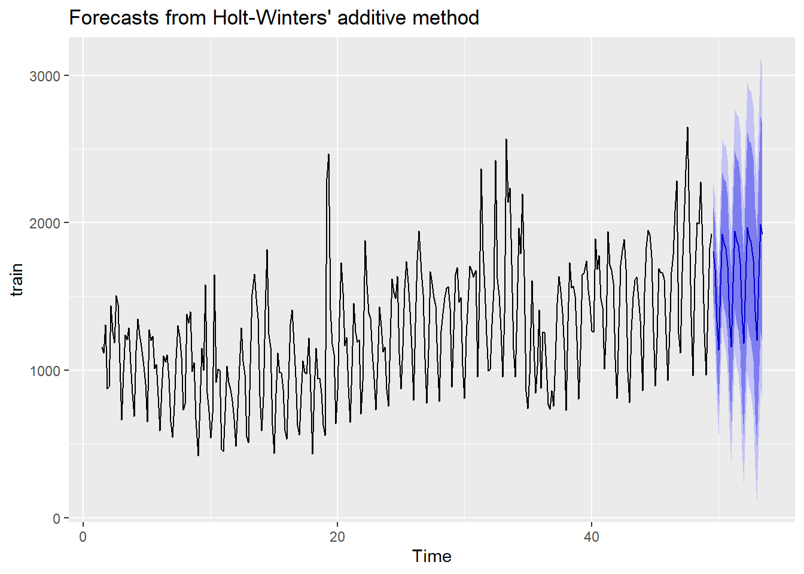